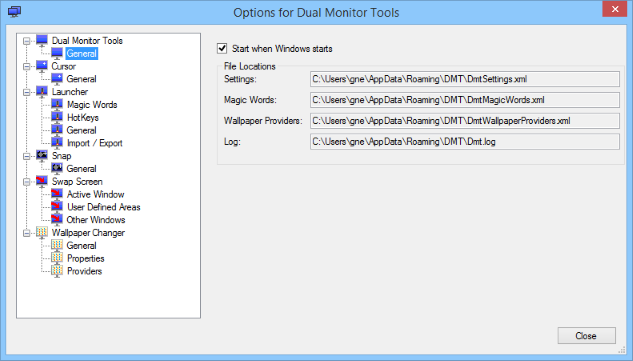
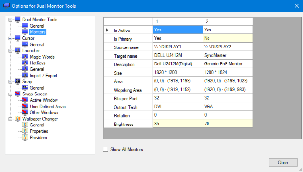

DMT General
DMT General
Provides configuration information about DMT and your monitors.
'General' options
This provides general options and shows the location of the configuration files that it uses.
Start when Windows starts
If you want DMT to start automatically when your computer boots, then just check the 'Start when Windows starts' option.
Installed Version
This will show the current version you have installed and whether it was installed from a msi installer or if it is a portable installation installed from a zip file.
File Locations
Shows the location of the files used by DMT.
'Monitors' options
Note that this screen and the ability to change primary monitor and brightness is only available if you have Windows 7 or later.
This shows a grid containing details about your monitors. Those cells that have a light yellow background have a context menu, or can be double clicked to change the values.
Currently it is only possible to change the primary monitor and to change each monitor's brightness. Changing the monitor brightness is not supported on some monitors.
Show all Monitors
This will also show (very limited) information about all possible monitor connections. This is of limited use now, but may be useful when DMT is enhanced to enable and disable monitors.